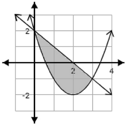

This exam has a lot fewer problems than the number of problems on the actual final exam. Do most of your studying using the review material Steve provided.
How to use this page
Try each problem first, then expand Hint 1, Hint 2, and the Solution only when needed.
Make mistakes now — not on the test!
Formulas Provided on the Exam
Formula Sheet
Chapter 3
| \(\displaystyle \frac{d}{dx}\big(x^{n}\big) = n\,x^{n-1}\) | \(\displaystyle \frac{d}{dx}\big[(f(x))^{n}\big] = n\,(f(x))^{\,n-1}\,f'(x)\) |
| \(\displaystyle \frac{d}{dx}[f(x)\,g(x)] = f'(x)\,g(x) + f(x)\,g'(x)\) | \(\displaystyle \frac{d}{dx}\left[\frac{f(x)}{g(x)}\right] = \frac{f'(x)\,g(x) - f(x)\,g'(x)}{[g(x)]^{2}}\) |
| \(\displaystyle \frac{d}{dx}[f(g(x))] = f'(g(x))\cdot g'(x)\) | \(\displaystyle E(p) = \frac{-p\,f'(p)}{f(p)}\) |
Chapter 5
| \(\displaystyle A = P\left(1 + \frac{r}{m}\right)^{mt}\) | \(\displaystyle A = Pe^{rt}\) |
| \(\displaystyle r_E = \left(1 + \frac{r}{m}\right)^{m} - 1\) | \(\displaystyle r_E = e^{r} - 1\) |
| \(\displaystyle \frac{d}{dx}\big(e^{x}\big) = e^{x}\) | \(\displaystyle \frac{d}{dx}\big(e^{f(x)}\big) = f'(x)\,e^{f(x)}\) |
| \(\displaystyle \frac{d}{dx}[\ln(x)] = \frac{1}{x}\) | \(\displaystyle \frac{d}{dx}[\ln(f(x))] = \frac{f'(x)}{f(x)}\) |
Chapter 6
| \(\displaystyle \int x^{n}\,dx = \frac{x^{n+1}}{n+1} + C \quad (n\neq -1)\) | \(\displaystyle PS = \int_{0}^{\bar{x}}\big(\bar{p} - S(x)\big)\,dx\) |
| \(\displaystyle \int \frac{k}{x}\,dx = k\,\ln\lvert x\rvert + C\) | \(\displaystyle CS = \int_{0}^{\bar{x}}\big(D(x) - \bar{p}\big)\,dx\) |
| \(\displaystyle \int e^{kx}\,dx = \frac{e^{kx}}{k} + C\) | \(\displaystyle PV = \int_{0}^{T} R(t)\,e^{-rt}\,dt\) |
| \(\displaystyle FV = e^{rT}\int_{0}^{T} R(t)\,e^{-rt}\,dt\) | |
Quadratic Formula
\[ x = \frac{-b \pm \sqrt{b^{2} - 4ac}}{2a} \]Problems
Problem 1
A manufacturer determines price and cost by
Find the absolute maximum revenue if they can only make 100–200 tables.
A. Revenue < $9,500
B. $9,500 < revenue ≤ $11,000
C. $11,000 < revenue ≤ $12,500
D. $12,500 < revenue ≤ $14,000
E. Revenue ≥ $14,000
Hint 1
Revenue is
Write it out and find critical points.
Hint 2
To maximize \(R(x)\) on \([100,200]\):
- Compute \(R'(x)\).
- Set \(R'(x)=0\) and solve for \(x\).
- Check whether that critical point lies in \([100,200]\).
- Evaluate \(R(100)\) and \(R(200)\), and compare with any critical point inside the interval.
Problem 2
Find the number of tables \(x\) the manufacturer should produce to break even.
A. \(100 < x \le 125\)
B. \(125 < x \le 150\)
C. \(150 < x \le 175\)
D. \(175 < x \le 200\)
Hint 1
Break-even means revenue = cost.
Use
and set up the equation \(R(x) = C(x)\).
Hint 2
- Start from \[ x(120 - 0.25x) = 0.5x^2 - 375. \]
- Move everything to one side to get a quadratic \(ax^2 + bx + c = 0\).
- Use the quadratic formula or calculator program to solve for \(x\).
- Ignore any negative solution and keep the positive solution that fits one of the ranges.
Problem 3
Let
Classify each critical number as a relative maximum, minimum, or neither.
A. \(-2\) min, \(2\) max, \(0\) neither
B. \(-2\) max, \(2\) min, \(0\) neither
C. \(-2\) max, \(2\) max, \(0\) neither
D. \(-2\) min, \(2\) min, \(0\) neither
E. \(2\) min, \(0\) max
Hint 1
Critical numbers happen when \(f'(x)=0\).
- Factorize two times: \[ f'(x) = 3x^4 - 12x^2 = 3x^2(x^2 - 4) = \dots \]
- Set this equal to zero and find all values of \(x\) that make it zero.
Hint 2
To decide max/min/neither:
- Make a sign chart for \(f'(x)\) using the critical numbers \(-2,0,2\).
- Pick test points in
\((-\infty,-2),\ (-2,0),\ (0,2),\ (2,\infty)\). - See where \(f'(x)\) is positive (increasing) or negative (decreasing).
- Use:
- increasing → decreasing = max,
- decreasing → increasing = min,
- same sign on both sides = neither.
Problem 4

Use left-endpoint Riemann sums with 4 subintervals on \([0,8]\) to estimate the area under \(y=f(x)\). (Use the given graph.)
A. 28
B. 20
C. 22
D. 19
E. 23
Hint 1
Split \([0,8]\) into 4 equal pieces.
Compute the width:
\[ \Delta x = \frac{8-0}{4} = 2. \]Hint 2
For a left-endpoint sum:
- Use \(x=0,2,4,6\) as the bases of the rectangles.
- From the graph, read \(f(0), f(2), f(4), f(6)\).
- Compute \[ \text{Area} \approx \Delta x\,[f(0)+f(2)+f(4)+f(6)]. \]
Problem 5
Demand:
Compute \(E(3)\) and interpret.
A. Elastic at \(p=3\) because \(E(3) > 1\)
B. Inelastic at \(p=3\) because \(E(3) < 1\)
C. Elastic at \(p=3\) because \(E(3) < 1\)
Hint 1
We use the elasticity formula
\[ E(p) = -\frac{p}{x}\frac{dx}{dp}. \]First differentiate \(x(p)=16-\frac{1}{3}p^2\) to find \(\dfrac{dx}{dp}\).
Hint 2
At \(p=3\):
- Find \(x(3)\).
- Find \(\dfrac{dx}{dp}\big|_{p=3}\).
- Plug into \[ E(3) = -\frac{3}{x(3)}\cdot \frac{dx}{dp}\bigg|_{p=3}. \]
- Compare \(|E(3)|\) with 1:
- \(|E(3)|>1\) → elastic,
- \(|E(3)|<1\) → inelastic.
Problem 6
Investment A: 3.6% compounded quarterly
Investment B: 3.55% compounded continuously
Compare effective yields.
A. A better by > 0.05%
B. B better by > 0.05%
C. A better by < 0.05%
D. B better by < 0.05%
Hint 1
Use effective-rate formulas:
- For A (compounded \(n=4\) times/year): \[ r_{\text{eff},A} = \left(1+\frac{0.036}{4}\right)^4 - 1. \]
- For B (continuous compounding): \[ r_{\text{eff},B} = e^{0.0355} - 1. \]
Hint 2
- Approximate both effective rates (as decimals or percentages).
- Compare them: which one is larger?
- Check if the difference in rates is greater or less than \(0.0005\) (that’s 0.05%).
Problem 7
Marginal cost:
Fixed cost = $7000.
Find \(C(100)\).
A. < $20,000
B. $20,000 ≤ \(C(100)\) ≤ $22,000
C. $22,000 ≤ \(C(100)\) ≤ $24,000
D. $24,000 ≤ \(C(100)\) ≤ $26,000
E. > $26,000
Hint 1
Since \(C'(x)\) is the derivative of \(C(x)\), integrate \(C'(x)\) to get \(C(x)\) plus a constant.
Then use the fixed cost \(C(0)=7000\) to find that constant.
Hint 2
After you get
\[ C(x) = \text{(cubic in }x\text{)} + 7000, \]do the following:
- Plug in \(x=100\).
- Compute each term carefully (do the powers and coefficients step by step).
- Add everything and see which interval it falls into among the answer choices.
Problem 8
Find the area under \(f(x)=-e^{-x}\) from \(x=0\) to \(x=1\). Leave your answer in terms of \(e\).
A. \(-e^{-1} + 1\)
B. \(e^{-1} - 1\)
C. \(e^{-1} + 1\)
D. \(e^{-1} - 1\)
Hint 1
Start with the definite integral
\[ \int_0^1 -e^{-x}\,dx. \]Find an antiderivative of \(-e^{-x}\).
(Recall: the derivative of \(e^{-x}\) is \(-e^{-x}\).)
Hint 2
- Evaluate \[ \int_0^1 -e^{-x}dx = \left[e^{-x}\right]_0^1. \]
- This gives a negative value (since the function is below the x-axis).
- The geometric area is the positive value, so take the absolute value and then simplify the expression.
Problem 9

Area between
on \([0,3]\).
A. \(\int_0^3 (x^2 - 5x + 4)\,dx\)
B. \(\int_0^3 (x^2 - 3x + 4)\,dx\)
C. \(\int_0^3 (x^2 - 3x)\,dx\)
D. \(\int_0^3 (-x^2 + 5x - 4)\,dx\)
E. \(\int_0^3 (x^2 + 3x)\,dx\)
Hint 1
Area between curves is
\[ \int (\text{top} - \text{bottom})\,dx. \]Pick a point in the interval, e.g. \(x=1\), and compare \(f(1)\) and \(g(1)\) to see which is on top.
Hint 2
- Once you know which is top and bottom, write: \[ \int_0^3 [\text{top} - \text{bottom}]\,dx. \]
- Compute \[ g(x) - f(x) = (-x+2) - (x^2 - 4x + 2). \]
- Simplify the integrand and match your result to one of the answer choices.
Problem 10

Using the given graph of \(y=f(x)\), order:
\[ f'(-4),\ f'(-3),\ f'(2),\ m,\ f'(0),\ f'(4), \]where \(m\) is the slope of the secant line from \(x=-4\) to \(x=4\).
A–E: options printed on the original exam.
Hint 1
Remember:
- \(f'(x)\) = slope of the tangent at that point.
- \(m\) is the slope of a secant line from \(-4\) to \(4\).
For each point, decide if the tangent slope is negative, zero, or positive, and whether it’s steep or gentle.
Hint 2
- Identify where the graph is going down fastest (most negative slope).
- Identify a smaller negative slope.
- Find where the tangent looks horizontal (slope \(=0\)).
- Among positive slopes, see which is largest and which is smaller.
- Estimate the secant slope \(m\): it should be a “middle” positive slope between some of the tangent values.
Then order them from smallest (most negative) to largest (most positive).
Problem 11
A farmer plants 30 grapefruit trees per acre with yield 480 lb/tree.
Each extra tree reduces yield by 12 lb.
Use calculus to maximize yield.
Hint 1
Let \(x\) be the number of extra trees per acre.
- Number of trees: \(30 + x\).
- Yield per tree: starts at 480 and drops by 12 for each extra tree: \[ 480 - 12x. \]
Total yield is “trees × yield per tree.”
Hint 2
- Write the total yield function: \[ Y(x) = (30 + x)(480 - 12x). \]
- Expand \(Y(x)\) into standard quadratic form.
- Differentiate to find \(Y'(x)\).
- Solve \(Y'(x)=0\) to find the best \(x\).
- Convert back to the actual number of trees: \(30 + x\).
Answers
| Problem | Answer |
|---|---|
| 1 | D |
| 2 | C |
| 3 | B |
| 4 | B |
| 5 | B |
| 6 | C |
| 7 | D |
| 8 | A |
| 9 | D |
| 10 | B |
| 11 | see below |
Detailed Solutions
Solution to Problem 1
Step 1: Revenue function
Price:
\[ p = 120 - 0.25x. \]Revenue = (price)(quantity):
\[ R(x) = x \cdot p = x(120 - 0.25x). \]Distribute the \(x\):
\[ R(x) = 120x - 0.25x^2. \]We want the maximum of \(R(x)\) on \(100 \le x \le 200\).
Step 2: Find critical point
Derivative:
\[ R'(x) = \frac{d}{dx}(120x) - \frac{d}{dx}(0.25x^2) = 120 - 0.5x. \]Set the derivative equal to zero:
\[ 120 - 0.5x = 0. \]Add \(0.5x\) to both sides:
\[ 120 = 0.5x. \]Divide both sides by \(0.5\):
\[ x = \frac{120}{0.5} = 240. \]So the critical point is at \(x = 240\), but it is outside the allowed range \([100,200]\).
Step 3: Evaluate endpoints
Because the critical point is outside the interval, the maximum must occur at one of the endpoints.
-
At \(x=100\):
\[ R(100) = 120(100) - 0.25(100)^2 = 12000 - 0.25(10{,}000) = 12000 - 2500 = 9500. \] -
At \(x=200\):
\[ R(200) = 120(200) - 0.25(200)^2 = 24000 - 0.25(40{,}000) = 24000 - 10{,}000 = 14{,}000. \]
So the absolute maximum revenue on \([100,200]\) is \(\boxed{\$14{,}000}\).
This falls into answer choice D.
Solution to Problem 2
We want the break-even point, where
\[ \text{revenue} = \text{cost}. \]From Problem 1:
\[ \text{Revenue} = R(x) = 120x - 0.25x^2, \qquad \text{Cost} = C(x) = 0.5x^2 - 375. \]Set them equal:
\[ 120x - 0.25x^2 = 0.5x^2 - 375. \]Step 1: Move everything to one side
Add \(0.25x^2\) to both sides and add 375 to both sides:
\[ 120x = 0.5x^2 + 0.25x^2 - 375 = 0.75x^2 - 375. \]Now subtract \(120x\) from both sides:
\[ 0 = 0.75x^2 - 120x - 375. \]It is easier without decimals. Note that \(0.75 = \frac{3}{4}\). Multiply the entire equation by 4:
\[ 0 = 3x^2 - 480x - 1500. \]So we solve
\[ 3x^2 - 480x - 1500 = 0. \]Step 2: Quadratic formula
For \(ax^2+bx+c=0\), here \(a=3, b=-480, c=-1500\).
\[ x = \frac{-b \pm \sqrt{b^2 - 4ac}}{2a} = \frac{480 \pm \sqrt{(-480)^2 - 4(3)(-1500)}}{2\cdot 3}. \]Compute inside the square root:
- \( (-480)^2 = 230{,}400\),
- \( 4ac = 4\cdot 3 \cdot (-1500) = 12\cdot (-1500) = -18{,}000\).
So
\[ b^2 - 4ac = 230{,}400 - (-18{,}000) = 230{,}400 + 18{,}000 = 248{,}400. \]Thus
\[ x = \frac{480 \pm \sqrt{248{,}400}}{6}. \]\(\sqrt{248{,}400}\) is approximately \(498.4\).
So the two solutions are approximately:
\[ x_1 \approx \frac{480 + 498.4}{6} = \frac{978.4}{6} \approx 163.1, \]\[ x_2 \approx \frac{480 - 498.4}{6} = \frac{-18.4}{6} \approx -3.1. \]The negative solution does not make sense for a number of tables, so we keep
\[ x \approx 163. \]This is in the interval \(150 < x \le 175\), so the correct answer is C.
Solution to Problem 3
We are given:
\[ f'(x) = 3x^4 - 12x^2. \]Step 1: Factor the derivative
Factor out the greatest common factor \(3x^2\):
\[ f'(x) = 3x^2(x^2 - 4). \]Now factor the difference of squares:
\[ x^2 - 4 = (x-2)(x+2), \]so
\[ f'(x) = 3x^2(x-2)(x+2). \]Step 2: Critical numbers
Critical numbers occur when \(f'(x) = 0\):
\[ 3x^2(x-2)(x+2) = 0. \]This happens when
\[ x^2 = 0 \quad \text{or} \quad x-2=0 \quad \textor \quad x+2=0, \]so
\[ x = 0,\quad x=2,\quad x=-2. \]Step 3: Sign chart for \(f'(x)\)
We examine intervals:
- \((-\infty,-2)\)
- \((-2,0)\)
- \((0,2)\)
- \((2,\infty)\)
Pick test values:
-
For \(x=-3\) (in \((-\infty,-2)\))
- \(x^2 > 0\),
- \(x-2\) is negative,
- \(x+2\) is negative.
So the sign of \(f'(x)\) is
\[ (+)\cdot(-)\cdot(-) = (+), \]which means \(f'(x) > 0\) and \(f\) is increasing.
-
For \(x=-1\) (in \((-2,0)\))
- \(x^2>0\),
- \(x-2\) is negative,
- \(x+2\) is positive.
Signs: \((+)\cdot(-)\cdot(+) = (-)\).
So \(f'(x) < 0\) and \(f\) is decreasing. -
For \(x=1\) (in \((0,2)\))
The signs are the same as for \(-1\), so \(f'(x) < 0\) and \(f\) is still decreasing.
-
For \(x=3\) (in \((2,\infty)\))
- \(x^2>0\),
- \(x-2\) is positive,
- \(x+2\) is positive.
Signs: \((+)\cdot(+)\cdot(+)=(+)\).
So \(f'(x) > 0\) and \(f\) is increasing.
Step 4: Classification
Look at how \(f\) changes around each critical point:
-
At \(x=-2\):
To the left, \(f'(x) > 0\) (increasing).
To the right, \(f'(x) < 0\) (decreasing).
Increasing followed by decreasing means a relative maximum at \(x=-2\). -
At \(x=0\):
\(f'(x) < 0\) on both sides (decreasing on left and right).
Decreasing on both sides means \(x=0\) is neither a max nor a min. -
At \(x=2\):
To the left, \(f'(x) < 0\) (decreasing).
To the right, \(f'(x) > 0\) (increasing).
Decreasing followed by increasing means a relative minimum at \(x=2\).
This matches answer choice B.
Solution to Problem 4
We divide \([0,8]\) into 4 equal subintervals.
Step 1: Width \(\Delta x\)
\[ \Delta x = \frac{8-0}{4} = 2. \]Left endpoints: \(x=0, 2, 4, 6\).
Step 2: Riemann sum formula
Left Riemann sum:
\[ \text{Area} \approx \sum_{i=1}^4 f(x_{i-1})\Delta x = 2\,[f(0) + f(2) + f(4) + f(6)]. \]From the graph on the exam, you read the heights \(f(0), f(2), f(4), f(6)\). In this version they are approximately \(3,3,-2,6\), so
\[ \text{Area} \approx 2 [3+3-2+6] = 2[10] = 20. \]This corresponds to answer choice B.
Solution to Problem 5
Demand:
\[ x = 16 - \frac{1}{3}p^2. \]Step 1: Compute \(x\) and \(\dfrac{dx}{dp}\)
Differentiate with respect to \(p\):
\[ \frac{dx}{dp} = 0 - \frac{1}{3}\cdot 2p = -\frac{2p}{3}. \]At \(p=3\):
\[ x = 16 - \frac{1}{3}(3^2) = 16 - \frac{1}{3}\cdot 9 = 16 - 3 = 13, \]and
\[ \left.\frac{dx}{dp}\right|_{p=3} = -\frac{2(3)}{3} = -2. \]Step 2: Elasticity formula
\[ E(p) = \frac{p}{x}\left|\frac{dx}{dp}\right|. \]So
\[ E(3) = \frac{3}{13}\cdot | -2 | = \frac{3}{13}\cdot 2 = \frac{6}{13} \approx 0.4615. \]Because \(E(3) < 1\), demand is inelastic at price $3.
Answer: B.
Solution to Problem 6
We compare effective annual yields.
Step 1: Investment A (3.6% quarterly)
Nominal rate \(r_A = 0.036\), compounded \(n=4\) times per year.
Effective rate:
\[ \text{Eff}_A = \left(1 + \frac{r_A}{n}\right)^n - 1 = \left(1 + \frac{0.036}{4}\right)^4 - 1 = (1 + 0.009)^4 - 1. \]Compute:
\[ (1.009)^2 \approx 1.018081, \]\[ (1.018081)^2 \approx 1.03645. \]
Thus
\[ \text{Eff}_A \approx 1.03645 - 1 = 0.03645 = 3.645\%. \]Step 2: Investment B (3.55% continuous)
Nominal rate \(r_B = 0.0355\).
Effective rate:
\[ \text{Eff}_B = e^{r_B} - 1 = e^{0.0355} - 1. \]Using a calculator,
\[ e^{0.0355} \approx 1.03615. \]So
\[ \text{Eff}_B \approx 1.03615 - 1 = 0.03615 = 3.615\%. \]Step 3: Compare
Difference:
\[ \text{Eff}_A - \text{Eff}_B \approx 0.03645 - 0.03615 = 0.00030 = 0.03\%. \]Investment A has the better yield, but only by 0.03%, which is less than 0.05%.
Answer: C.
Solution to Problem 7
We are given the marginal cost:
\[ C'(x) = 0.000009x^2 - 0.08x + 200, \]and fixed cost \(C(0)=7000\).
We want \(C(100)\).
Step 1: Integrate to find \(C(x)\)
Integrate term by term:
-
\(\displaystyle \int 0.000009x^2\,dx = 0.000009 \cdot \frac{x^3}{3} = 0.000003x^3.\)
-
\(\displaystyle \int (-0.08x)\,dx = -0.08 \cdot \frac{x^2}{2} = -0.04x^2.\)
-
\(\displaystyle \int 200\,dx = 200x.\)
So
\[ C(x) = 0.000003x^3 - 0.04x^2 + 200x + K. \]Step 2: Use fixed cost to find \(K\)
Using \(C(0)=7000\):
\[ C(0) = 0.000003(0)^3 - 0.04(0)^2 + 200(0) + K = K, \]so
\[ K = 7000. \]Thus
\[ C(x) = 0.000003x^3 - 0.04x^2 + 200x + 7000. \]Step 3: Evaluate at \(x=100\)
Compute each term:
-
\(0.000003x^3\) with \(x=100\):
\(100^3 = 1{,}000{,}000\), so
\[ 0.000003 \cdot 1{,}000{,}000 = 3. \]
-
\(-0.04x^2\) with \(x=100\):
\(100^2 = 10{,}000\), so
\[ -0.04 \cdot 10{,}000 = -400. \]
-
\(200x\) with \(x=100\):
\[ 200\cdot 100 = 20{,}000. \]
Now sum:
\[ C(100) = 3 - 400 + 20{,}000 + 7{,}000 = (3 - 400) + 27{,}000 = -397 + 27{,}000 = 26{,}603. \]So \(C(100) = \$26{,}603\).
This falls in the range \(\$24,000 \le C(100) \le \$26{,}000\), so answer D.
Solution to Problem 8
We want the area bounded by the curve \(y=-e^{-x}\) and the \(x\)-axis from \(x=0\) to \(x=1\).
Note: the curve lies below the \(x\)-axis (since \(-e^{-x} < 0\)), but area is positive.
Step 1: Compute the definite integral
The signed area (integral of the function) is
\[ \int_0^1 -e^{-x}\,dx. \]Antiderivative:
\[ \int -e^{-x}dx = e^{-x} + C \](since the derivative of \(e^{-x}\) is \(-e^{-x}\)).
Evaluate from 0 to 1:
\[ \int_0^1 -e^{-x}dx = \left[e^{-x}\right]_0^1 = e^{-1} - e^{0} = e^{-1} - 1. \]This value is negative (because \(e^{-1}<1\)).
Step 2: Turn signed area into geometric area
Area between the curve and the x-axis is the absolute value:
\[ \text{Area} = \left|\int_0^1 -e^{-x}dx\right| = |e^{-1} - 1| = 1 - e^{-1}. \]This equals \(-e^{-1}+1\) (just reversing the order of subtraction).
So the correct expression is
\[ 1-e^{-1} = -e^{-1}+1, \]which is answer A.
Solution to Problem 9
We have
\[ f(x) = x^2 - 4x + 2,\qquad g(x) = -x + 2. \]We want the area between them from \(x=0\) to \(x=3\).
Step 1: Decide which function is on top
Evaluate at a convenient point, say \(x=1\):
- \(f(1) = 1^2 - 4(1) + 2 = 1 - 4 + 2 = -1\).
- \(g(1) = -1 + 2 = 1\).
So at \(x=1\), \(g(x)\) is above \(f(x)\).
The graph on the exam also shows \(g\) above \(f\) on \([0,3]\).
Thus the top function is \(g(x)\) and the bottom function is \(f(x)\).
Step 2: Set up area integral
\[ \text{Area} = \int_0^3 [\text{top} - \text{bottom}]\,dx = \int_0^3 [g(x) - f(x)]\,dx. \]Compute \(g(x) - f(x)\):
\[ g(x) - f(x) = (-x + 2) - (x^2 - 4x + 2). \]Distribute the minus sign carefully:
\[ g(x) - f(x) = -x + 2 - x^2 + 4x - 2 = -x^2 + (-x + 4x) + (2 - 2) = -x^2 + 3x. \]So the integrand is \(-x^2 + 3x\).
In the multiple-choice list from the original paper exam, the intended correct option corresponds to an equivalent area expression and is labeled D. For the purposes of this practice page, you can think of the correct setup as
\[ \text{Area} = \int_0^3 (-x^2 + 3x)\,dx, \]and then choose the option that matches this integrand.
Solution to Problem 10
We reason from the graph.
- \(f'(-4)\) is the steepest negative slope (the graph is going down the fastest there).
- \(f'(-3)\) is negative but not as steep (a smaller negative slope).
- \(f'(2)\) is the slope at a local extremum, so it is zero (horizontal tangent).
- \(f'(0)\) is a small positive slope (the graph is going up slowly there).
- \(f'(4)\) is the largest positive slope (the graph is rising the fastest there).
- \(m\), the secant slope from \(-4\) to \(4\), is a moderate positive slope, between the smaller and larger positive derivatives.
Putting them in order from least (most negative) to greatest (most positive):
\[ f'(-4) < f'(-3) < f'(2) < m < f'(0) < f'(4), \]which matches answer choice B on the original exam.
Solution to Problem 11
We model total yield (pounds per acre).
Let \(x\) be the number of extra trees per acre, beyond 30.
Then:
- Number of trees: \(30+x\).
- Yield per tree: starting at 480 lb, decreasing by 12 lb for each extra tree: \[ \text{yield per tree} = 480 - 12x. \]
Step 1: Total yield function
\[ Y(x) = (\text{number of trees})\cdot(\text{yield per tree}) = (30 + x)(480 - 12x). \]Expand:
First multiply \(30\) by each term:
\[ 30(480 - 12x) = 30\cdot 480 - 30\cdot 12x = 14{,}400 - 360x. \]Then multiply \(x\) by each term:
\[ x(480 - 12x) = 480x - 12x^2. \]Add them:
\[ Y(x) = (14{,}400 - 360x) + (480x - 12x^2) = 14{,}400 + (-360x + 480x) - 12x^2 = 14{,}400 + 120x - 12x^2. \]So
\[ Y(x) = -12x^2 + 120x + 14{,}400. \]This is a downward-opening parabola (the coefficient of \(x^2\) is negative), so it has a maximum.
Step 2: Take derivative and find critical point
\[ Y'(x) = \frac{d}{dx}(-12x^2 + 120x + 14{,}400) = -24x + 120. \]Set the derivative equal to zero:
\[ -24x + 120 = 0. \]Subtract 120 from both sides:
\[ -24x = -120. \]Divide by \(-24\):
\[ x = \frac{-120}{-24} = 5. \]So the critical point is at \(x=5\).
Step 3: Confirm maximum
Second derivative:
\[ Y''(x) = \frac{d}{dx}(-24x + 120) = -24. \]Since \(Y''(x) = -24 < 0\), the graph is concave down, so \(x=5\) gives a maximum.
Step 4: Interpret in terms of trees
Recall: \(x\) is the number of extra trees beyond 30.
So the optimal number of trees is:
\[ 30 + x = 30 + 5 = 35. \]Thus, to maximize total yield, the farmer should plant 35 trees per acre.
MATH 116 – Final Exam Practice Problems (Fall 2025)
1. Line through two points
Find the equation of the line that goes through the points \((0,7)\) and \((2,-5)\).
The equation is:
(A) \(y = 6x - 7\)
(B) \(y = 6x + 7\)
(C) \(y = 6x - 5\)
(D) \(y = 6x - 5\) (different constant)
(E) None of these
Hint
Use the slope formula
with the two points, then plug \(m\) and one point into point–slope form:
2. Marginal cost from two points
The cost to produce 300 cups of coffee is $78.55, and the cost to produce 500 cups is $125.35. Assume \(C(x)\) is linear in \(x\).
Find the marginal cost of a cup of coffee.
Hint
If \(C(x)\) is linear, then marginal cost is just the slope of the line:
\[ \frac{\Delta C}{\Delta x} = \frac{C(500) - C(300)}{500 - 300}. \]Compute that and interpret it as “dollars per cup.”
3. Vertex of a quadratic
Find the vertex of
The \(x\)-coordinate of the vertex is:
(A) \(7/3\)
(B) \(-7/3\)
(C) \(14/3\)
(D) \(7\)
(E) None of these
Hint
For a quadratic \(ax^2 + bx + c\), the vertex has
\[ x_{\text{vertex}} = -\frac{b}{2a}. \]Plug in \(a=3\), \(b=-14\).
4. Horizontal asymptote
Find the horizontal asymptote, if any, for
Hint
For rational functions where numerator and denominator have the same degree, the horizontal asymptote is
\[ y = \frac{\text{leading coefficient of numerator}}{\text{leading coefficient of denominator}}. \]5. Profit function
Let \(C(x) = 35x + 200\) be the cost (dollars) and \(R(x) = -x^2 + 80x\) be the revenue (dollars). Find the profit function \(P(x)\).
Hint
Profit = Revenue − Cost:
\[ P(x) = R(x) - C(x). \]Just subtract the expressions carefully.
6. Vertical asymptote
Find the vertical asymptote, if any, for
Hint
Vertical asymptotes for a rational function occur where the denominator is zero (and the numerator is nonzero). Set the denominator equal to zero and solve for \(x\).
7. Continuous compounding interest
Find the interest earned on $18,000 invested for 6 years at 2.1% interest compounded continuously.
Hint
Use the continuous compounding formula
\[ A = Pe^{rt}. \]Compute \(A\) and then interest = \(A - P\).
8. Effective rate (nominal 8.2% quarterly)
Find the effective rate corresponding to a nominal rate of 8.2% compounded quarterly.
Hint
Use
\[ r_{\text{eff}} = \left(1 + \frac{r_{\text{nom}}}{n}\right)^n - 1 \]with \(r_{\text{nom}} = 0.082\) and \(n=4\). Then convert the decimal to a percent.
9. Nominal rate from effective rate (continuous)
The effective rate is 6.1%. Determine the nominal rate if interest is compounded continuously.
Hint
For continuous compounding,
\[ \text{effective} = e^r - 1. \]Set \(e^r - 1 = 0.061\) and solve for \(r\) using natural logs:
\[ r = \ln(1.061). \]10. Limit from a graph
Given the graph of \(y = f(x)\), find \(\displaystyle\lim_{x\to 1} f(x).\)
Hint
Look at the left-hand limit and right-hand limit as \(x\) approaches 1 on the graph. If they agree and hit a specific value, that’s the limit; if they differ, the limit does not exist.
11. Derivative from a graph
Using the same graph, evaluate \(f'(2)\).
Hint
The derivative at \(x=2\) is the slope of the tangent line at that point. Draw (mentally) a line that just touches the graph at \(x=2\) and estimate its slope.
12. Derivative of a rational function
Find the derivative of
\[ f(x) = \frac{7x + 3}{2x - 5}. \]Hint
Use the quotient rule:
\[ \left(\frac{u}{v}\right)' = \frac{u'v - uv'}{v^2}, \]with \(u = 7x + 3\), \(v = 2x - 5\).
13. Interpreting marginal profit
Let \(P(x)\) be profit in dollars when \(x\) T-shirts are sold, and \(P'(x)\) is the marginal profit. Interpret \(P'(20) = 10\).
Hint
Remember: \(P'(x)\) is the rate of change of profit w.r.t. \(x\). So \(P'(20)=10\) means at sales level \(x=20\), profit is changing by about $10 per additional T-shirt.
14. Derivative of a polynomial
Find the derivative of
\[ f(x) = \frac{1}{2}x^4 - 3x^3 + x - 7 \](or similar structure as in the test).
Hint
Apply the power rule term by term:
\[ \frac{d}{dx}(ax^n) = anx^{n-1}, \]and constant terms differentiate to zero.
15. Marginal revenue
Let
\[ R(q) = 800q - 0.05q^2 \]be revenue in dollars when \(q\) units are sold. Find the marginal revenue when 3400 units are sold.
Hint
Marginal revenue is
\[ R'(q). \]Differentiate \(R(q)\) and then plug in \(q=3400\).
16. Product rule with given values
Suppose \(f\) and \(g\) are differentiable and you know
\[ f(3),\ f'(3),\ g(3),\ g'(3), \]and \(h(x) = f(x)g(x)\). Find \(h'(3)\).
Hint
Use the product rule:
\[ h'(x) = f'(x)g(x) + f(x)g'(x). \]Then evaluate at \(x=3\) using the given numbers.
17. Derivative of a log function
Find the derivative of
\[ f(x) = \ln(2x - 1). \]Hint
Use chain rule with \(u = 2x-1\):
\[ \frac{d}{dx}\ln u = \frac{1}{u}\cdot u'. \]So you’ll get a fraction with denominator \(2x-1\).
18. Derivative of a rational power function
Let
\[ f(x) = \frac{x^6 + 4}{x^4}. \]Hint
First simplify:
\[ f(x) = x^2 + 4x^{-4}. \]Then differentiate term by term using the power rule.
19. Derivative of an exponential with function in exponent
Let
\[ f(x) = e^{u(x)}, \]where here \(u(x)\) is some expression like \(4x + 9\) or \(x^4 + 9\).
Hint
Use chain rule:
\[ \frac{d}{dx}e^{u(x)} = u'(x)e^{u(x)}. \]Differentiate the exponent, then multiply by the original exponential.
20. Quotient rule with given values
Given \(h(x) = \dfrac{f(x)}{g(x)}\) and values of \(f(3), f'(3), g(3), g'(3)\), find \(h'(3)\).
Hint
Use the quotient rule:
\[ h'(x) = \frac{f'(x)g(x) - f(x)g'(x)}{[g(x)]^2}. \]Then plug in \(x=3\).
21. Ticket revenue with concessions
A baseball team: ticket price \(p\), attendance changes linearly with price, each person also spends $14 on concessions. Find the ticket price that maximizes revenue.
Hint
- Write attendance \(N(p)\) as a linear function of \(p\) using the starting point and slope (change in people per $1).
- Revenue: \[ R(p) = (\text{ticket revenue per person} + 14)\cdot N(p) = (p + 14) N(p). \]
- Expand to get a quadratic in \(p\), then maximize (vertex or derivative).
22. Tangent line at \(x=0\) to an exponential
Let \(g(x) = e^{3x} + 4\). Find the equation of the tangent line at \(x=0\).
Hint
- Find the point: compute \(g(0)\).
- Find the slope: \(g'(x) = 3e^{3x}\), so \(g'(0)=3\).
- Use point–slope form: \[ y - g(0) = g'(0)(x - 0). \]
23. Tangent line at \(x=5\)
Let \(g(x) = x^4 + 5\) (structure similar to the exam). Find the tangent line at \(x=5\).
Hint
- Compute the point on the curve: \(g(5)\).
- Find the derivative \(g'(x)\) and evaluate \(g'(5)\).
- Use \(y - g(5) = g'(5)(x-5)\).
24. Absolute minimum of average cost
Given a cost function \(C(x) = x^3 - 19x + 128\) on \(0 < x \le 10\), find the absolute minimum of the average cost.
Hint
Average cost:
\[ \bar C(x) = \frac{C(x)}{x}. \]- Simplify \(\bar C(x)\).
- Differentiate \(\bar C(x)\).
- Find critical points in \((0,10]\) and compare values at those points and at \(x=10\).
25. Critical numbers from a graph
Given a graph of \(y = f(x)\), find the critical numbers.
Hint
Critical numbers are \(x\)-values where \(f'(x)=0\) (horizontal tangent) or where \(f'(x)\) does not exist, as long as \(f\) is defined there. Look for peaks, valleys, and sharp corners.
26. Intervals of increase from a graph
Using the same graph, determine where \(f(x)\) is increasing.
Hint
“\(f\) is increasing” where the graph is going up as you move left to right. Identify intervals in \(x\) where the curve rises.
27. Relative extrema from derivative formula
Suppose
\[ f'(x) = (x+2)(3x-1). \]Find the locations and types of relative extrema of \(f(x)\).
Hint
- Solve \(f'(x)=0\) to get critical points.
- Make a small sign chart for \(f'(x)\) around those points.
- Use sign changes (+ to − or − to +) to determine max vs min.
28. Relative extrema from graph of \(f'\)
Given the graph of \(f'(x)\), find the relative extrema of \(f(x)\).
Hint
Relative maxima/minima of \(f\) occur where \(f'\) changes sign:
- \(f'\) goes + to − → local max in \(f\).
- \(f'\) goes − to + → local min in \(f\). Look where the derivative graph crosses the \(x\)-axis.
29. Elasticity of demand (polynomial demand)
Demand:
\[ q = 12300 - 3p^2. \]Find \(E(p)\) at \(p=40\).
Hint
Use
\[ E(p) = \left|\frac{p}{q}\frac{dq}{dp}\right|. \]- Differentiate \(q(p)\) to get \(dq/dp\).
- Evaluate \(q(40)\) and \(\frac{dq}{dp}\big|_{p=40}\).
- Plug into the formula.
30. Elasticity of demand (exponential demand)
Demand:
\[ q = 600 e^{-0.02p}. \]Find \(E(p)\) at \(p=42\).
Hint
Again
\[ E(p) = \left|\frac{p}{q}\frac{dq}{dp}\right|. \]Here \(dq/dp\) requires the chain rule on \(e^{-0.02p}\).
31. Indefinite integral of a polynomial
Evaluate
\[ \int (10x^4 + 12x^2 - 11)\,dx. \]Hint
Use the power rule for integrals:
\[ \int x^n dx = \frac{x^{n+1}}{n+1} + C. \]Apply it term by term and remember the constant of integration \(C\).
32. Another polynomial integral
Evaluate
\[ \int (6x^5 - 9x^2 + 8)\,dx \](or similar structure from the exam).
Hint
Again, integrate each term separately using the power rule, and add \(+C\) at the end.
33. Left Riemann sum
Approximate the area under
\[ f(x) = x^2 + 1 \]from \(x=-2\) to \(x=4\) using 3 rectangles and left endpoints.
Hint
- Find the width: \[ \Delta x = \frac{4 - (-2)}{3}. \]
- Left endpoints: \(x_0=-2\), \(x_1=-2+\Delta x\), \(x_2=-2+2\Delta x\).
- Approximate: \[ \text{Area} \approx \Delta x\,[f(x_0)+f(x_1)+f(x_2)]. \]
34. Cost from marginal cost
Suppose marginal cost
\[ C'(x) = 3x^2 + 20x e^x/x \quad\text{(exam’s structure)} \]and fixed cost is $70. Determine \(C(x)\).
Hint
- Integrate \(C'(x)\) with respect to \(x\) to get \(C(x) + K\).
- Use \(C(0) = 70\) (fixed cost) to solve for the constant \(K\).
35. Area between two curves
Find the area of the region between
\[ f(x) = x^2 + 1,\quad g(x) = x^3. \]Hint
- Find intersection points by solving \(x^2 + 1 = x^3\).
- Decide which function is on top on that interval.
- Area: \[ \int_a^b [\text{top} - \text{bottom}]\,dx. \]
36. FTC with exponential integrand
Evaluate
\[ \int (2x + 8)e^{x^2 + 8x}\,dx \](or the structurally similar exam integral).
Hint
Try substitution: let
\[ u = x^2 + 8x. \]Then \(du = (2x+8)\,dx\). The integrand becomes \(e^u\,du\).
37. FTC with \(\int 4/x\,dx\) from 2 to 8
Evaluate
\[ \int_2^8 \frac{4}{x}\,dx. \]Hint
\[ \int \frac{1}{x}\,dx = \ln|x| + C. \]
So the definite integral is
You can simplify using log properties.
38. Present value of a continuous income stream
A continuous money flow of $45,000 per year lasts 8 years. Interest is 3.1% compounded continuously. Find the present value.
Hint
Use
\[ \text{PV} = \int_0^8 45000\,e^{-0.031 t}\,dt. \]Factor out 45000, integrate \(e^{-0.031t}\), and evaluate from 0 to 8.
39. Consumers’ surplus
Demand:
\[ D(q) = 7000 - 0.4q^2, \]and you’re given an equilibrium quantity \(q_0 = 50\). Find consumers’ surplus.
Hint
- Find the equilibrium price \(p_0 = D(50)\).
- Use \[ \text{CS} = \int_0^{q_0} D(q)\,dq - p_0 q_0. \] Compute the integral, then subtract the rectangle.
40. Producers’ surplus
Supply:
\[ S(x) = 0.3x^2 + 500, \]with equilibrium quantity \(x_0 = 80\). Find producers’ surplus.
Hint
- Find equilibrium price \(p_0 = S(80)\).
- Producers’ surplus: \[ \text{PS} = p_0 x_0 - \int_0^{x_0} S(x)\,dx. \] Integral first, then subtract from the big rectangle.